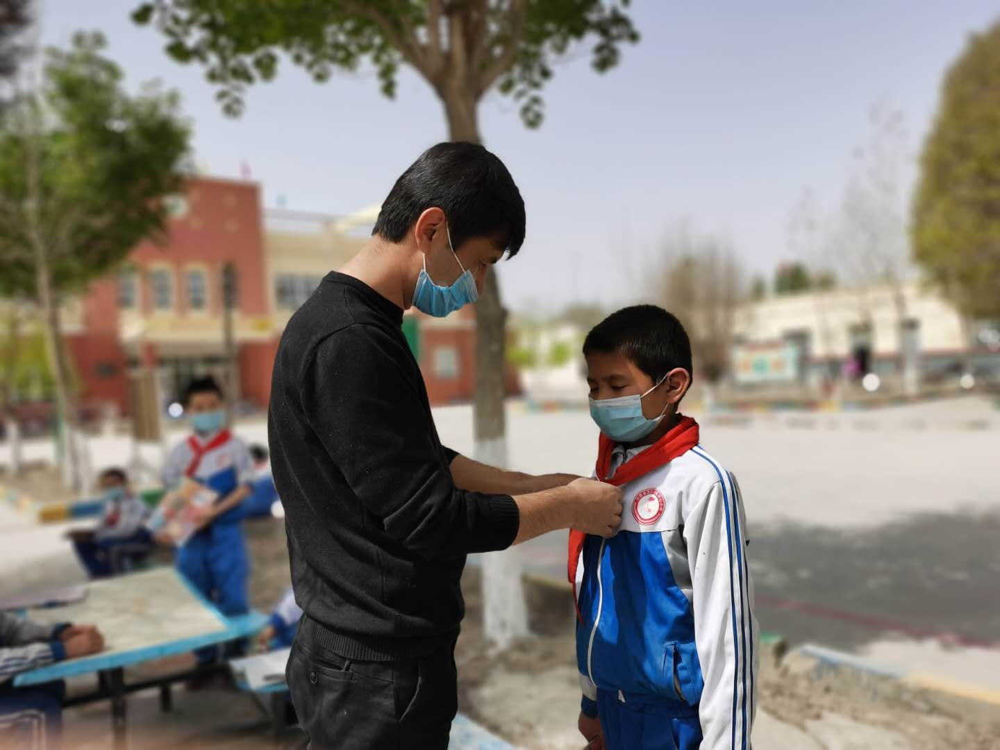

动态
生活中处处需要爱，爱，无处不在。它也许是沙漠里的一泓清泉；是枯树的一片新绿； 是生病时的一声问候；是夜空中一颗颗闪耀点缀的星星……教育扶贫便是这爱的种子。
我是库如勒库木村小学的一名教师，也是一名新老师，根据学校的统一安排， 我跟学校的其他老师一样都和学生一起结对子。五年级一班布海加热·依明便是我结对子的一名学生。
通过一段时间的接触，对布海加热·依明的家庭情况和学习困难有了进一步的了解， 在接下来的时间了，我一有时间就找她谈心，了解她生活、学习中的困难， 利用课间及闲余时间帮她复习学习中的知识。
扶贫先扶志，扶智即扶贫。为了不让贫困代际传播下去，为了这个贫困的家庭走出困境， 我坚持每周找她谈话谈心，询问了解她学生、生活上的困难，帮助其端正学习态度，树立学习、生活的信心。
通过和学生结对子活动，我深知作为年轻的老师肩上的担子很重，我们不光是教书育人， 要想为社会多做点贡献、去帮助那些在困难中挣扎的人们， 用自己的实际行动改变一些自己能够改变的东西，让更多有困难的孩子摆脱物质和精神上的贫困。
我教这个班的语文，在五年级刚开学的时候，我发现她学习不主动， 不会举手回答问题，做事情没有胆量，我也意识到她的问题不是一天两天就能解决的， 于是我每天给她一点小小的鼓励和惊喜，有时候不会做的题目耐心的指导她， 给她辅导没有掌握的知识，慢慢的有所进步，到了学期末的时候，我发现她慢慢进步了， 她的成绩由原来的倒数已经爬到了班级前几名，我为她感到高兴， 现在她每节课都能积极举手回答问题，上课的每一个知识点，她都能够掌握，她进步了，我也笑了。
通个家访和平时的了解，我知道，她喜欢学习，我给她让从学校图书室里找自己喜欢的书去看， 在学习新知识的同时，掌握课本中的词语，慢慢的我发现这文静的小女孩，
现在越来越大方了，对生活也有了自己的梦想，对老师有礼貌，遵守学校规章制度， 我希望她以后对生活充满阳光，越来越好。
这以后，我终于可以多看见一个阳光灿烂的女孩，活跃在校园的每个角落。 爱的便笺原来是如此的神奇！期待她将来能够做一个对社会奉献爱心，对社会有用的人才。
This is just a place holder

You can remove any link to our website from this website template, you're free to use this website template without linking back to us. You can remove any link to our website from this website template, you're free to use this website template without linking back to us. This is justa place holder, so you can see what the site would look like. You can remove any link to our website from this website template, you're free to use this website template without linking back to us.
(more)This is just a place holder
You can remove any link to our website from this website template, you're free to use this website template without linking back to us. You can remove any link to our website from this website template, you're free to use this website template without linking back to us. This is justa place holder, so you can see what the site would look like. You can remove any link to our website from this website template, you're free to use this website template without linking back to us.
(more)
联系方式
-
地址 :
阿斯顿法国红酒看来
- 邮箱 :
-
电话 :
(000) 987 65 43 2100